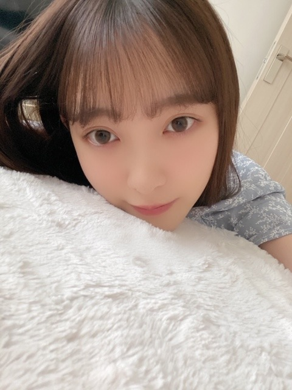

2020/0505Tue7
もう半袖でもいいかなって
思ってきました
こんにちは
堀未央奈です☺︎
半袖は早いですかね〜？
そうめんも早いかな？
あ、とうもろこしは食べました
夏は結構すきです
フジファブリックさんのブルー
は、曲もMVも大好きで
ああいう夏過ごしたかったなって思います
今世では無理なので
生まれ変わったらしたいと思います

今日5月5日で
デビュー7周年を迎えました!
いつもありがとうございます(o^^o)
プリンシパルでのお披露目...
今でも鮮明に覚えています
緊張したなぁ
髪長かったなぁ
たくさんの事がありましたし
いまでも落ち込む事はあるけど
乃木坂に入って得られたものも
たくさんあって
かけがえのない毎日でした☺︎
お母さんと毎日寝てた子が
1人で寝れるようになり
挑戦することが苦手で平凡を求めていた子が
いろんなことに挑戦して
変わりゆく毎日を楽しめるようになり
人を信頼してもいいことはない期待はしないと
思っていた子が
大切な人達を私は信じていこう
と思えるようになり
ダンスが全然できなかった子が
自主練でもやるくらいダンスが好きになり
些細なことも気にしてしまう思い込みの激しい
ネガティヴな性格も
切り替えてポジティブに持っていけるようになり
人って変われるんだなぁと...
これからも頑張らなきゃ!
今年で24歳になるし
また新たなことにも挑戦していきたいです
がんばりますね♩
今日は、
衣装部屋がご覧の通り汚いので
掃除をしたいと思います
あとはペーパーハウスの続きを見て
恋するジェネレーションの続きを見よう
では!


コメント(529)
今日も暑いね
衣替えしようかなあ(>_<)
デビュー7周年おめでとう
新たな1年も応援届けていくね！
今日も未央奈ちゃんにHAPPYを
僕は、もう半袖で過ごしているので
別に早くはないと思いますよ!!
そうだね。もう
初夏だね。
半袖でもいいと思うよ
デビュー７周年
アナスターシャのＭＶのダンスを見ていると
ダンスができなかったとは思えません。
昨日のブログに書いてあったオードリーの言葉のように
「ありのままの自分で生きられる」ように頑張ってください。
では。
そして、ありがとう
たくさん変化や進化して
新しい魅力をどんどん見せてくれるから、
それでいて努力することは変わらないみおなだから、
元気もたくさんもらったし
応援してきて良かったなって心から思う
新しい挑戦も楽しみにしてるね！
ずっと応援してます♪
Twitterのとうもろこし動画見たよ！
みおなはガブッといく派なんだねー
自分は下の歯でポロポロって粒を取っていくタイプです◎
とうもろこしをこんなに美味しそうに食べられるのはみおなだけ！笑
ちなみに自分は半袖デビューしたよ～
いつも堀ちゃんに元気をもらってます！♥
まだ握手会にもライブにも行ったことがないから、行けるまで絶対卒業しないでね～
センターもまた見たいです！！
自分はもう半袖はもちろんのこと、扇風機も出ています笑
食べる未央奈かわいかった！
7周年おめでとうございます。
もっとはやく未央奈ちゃんに出会いたかったって思いもすごくあるけど
本当に堀未央奈ちゃんってゆう方に出会えて良かったです。
私の中で未央奈ちゃんは原点であり頂点です！！
未央奈ちゃんのおかげで毎日頑張れてるし、一つ一つの言葉にすごく救われています。
毎日毎回何かある事に未央奈ちゃん推しててよかった。っていう気持ちになります！！！
これからも応援しまくってしまくります！笑
だいすきです！
いつもありがとうございます！
私も今絶賛大掃除中です。755にアレルギーのこと書いたけど、もうちょっと詳しく書いておくね。
私も犬・猫はじめダニとかハウスダストとかその他もろもろたくさんアレルギーがあるんだけど舌下錠を始めたら少しずつ良くなってきたよ。最初はお医者さんに毎月行かなきゃいけないけど，薬に慣れてきたら家族の方とかに薬を取ってきてもらうだけで大丈夫だと思います。私の場合だから，ちょっと違うかもしれないけど… アレルギーの大変さはとてもよく分かります。(私も酷い時は過呼吸とかになるからね) それに，未央奈ちゃんはすごく忙しいから大変だよね。未央奈ちゃんのアレルギーが良くなりますようにってずっとお祈りしてるね
7周年おめでとう！
乃木坂に入って来てくれてありがとうm(_ _)m
乃木坂46の堀未央奈として出会えて本当に良かった。
今まで様々な苦労や壁を乗り越えて来た未央奈は本当に強い女性だと思うよ！
未央奈は今まで多くの人に勇気や元気を与えてきたと思う。
こうやって今コメントしてる私も未央奈から沢山の笑顔や元気をもらって生きてる。
人生における様々な辛い事があったりするようなタイミングで未央奈から助けてもらったことが沢山あるから本当に感謝しかないm(_ _)m
今までもこれからも様々な形を通して恩返しのような事がもし出来たらいいなと思ってる。
常に思ってる事だけど、今まで推してきて良かったなって思ってるし、これからも推し続ける！
755で見たけど、アレルギー体質どうにかしたいね。
調べてみる！
暑くなってきたから体調には気をつけて。
真夏になったらどれくらいの暑さに
なるんだろうと毎年恒例の愚痴を
言ってます。
僕は既に半袖もそうめんも始めました
なんだけど、とうもろこしはさすがに
まだですね〜。というか1人では
なかなかね…
Twitterのもぐもぐ良かったよ。
可愛いし癒される。ASMRとして
十二分の満足度です。
衣装部屋が汚いようには見えないけど
頑張ってね。終わった時の達成感は
得られるけど、僕は3日で元に戻す
自信があるかなぁ。
7周年おめでとう。
何度目か言われようとも言っておきます。
それだけの努力をしてきたんだから
これくらい祝福の言葉を言う人が
いてもいいですよね。
ではでは。
洋服似合ってますね！
毎日ブロブたのしみにしてまーす
今日は暑いね。自分も今日は半袖だから全然早くないと思うよ♪そうめんも食べたいよね(о´∀`о)
自分も今日は普段出来ない場所の掃除をします！あとは、SPECの続きを観るよ♪また、ブログの更新楽しみにしてるね♪未央奈ちゃん大好きだよ♪
では！堀 未央奈神推し秀喜より！(≧∇≦)
今までもたくさん楽しませてくれてありがとう
これからも活躍を楽しみにしています
未央奈さんを推せて幸せです
とうもろこしの動画見ました
可愛かったよ
ブログ更新ありがとう
うちも半袖着てるよ〜
今日はお菓子作りした〜
次の更新も待ってるね！
福岡の僕は今日からTシャツとサルエルで出勤しています、とても暑いです
今日でデビュー7周年、おめでとう！！！
未央奈が乃木坂46に入ってくれてよかった！
私も未央奈に出会えてよかった！！
これからも全力で応援していきますので、よろしくね☺️❤️
大好き❤️
ほぼ毎日、ブログ更新ありがとう～！！
これからも応援してます！
デビュー7周年おめでとう！自分も半袖着てるよ！寝る時も半袖、ちょっと寒い！あと乃木坂工事Blu-ray買います！
くつとかなにはいてる
今日ぐらいの気候なら、半袖でもいいか
なって。
でもまた梅雨時は、寒い日もあるから、
衣替えはもう少し待ちましょう。
家にずーっと居ても、みおなちゃんは
綺麗にしてますね。
人って変われるけど、やっぱり自然に変
わるものじゃなくて、みおなちゃんの意
志が、そこにあったのだと思います。
こういう時だから、こうやって沢山ブロ
グを上げてくれるのも、実は強い気持ち
を持っているからこそ。
大昔の朝ドラで、澪つくしってのがあっ
たなぁ。
更新ありがとうございます^^*
そしてそして！7周年おめでとうございます！
(*´꒳`ﾉﾉﾞ☆ﾊﾟﾁﾊﾟﾁﾊﾟﾁﾊﾟﾁ
これからもずっとずっと応援してます (^q^ )
未央奈ちゃんはいつでも本当に可愛いですよね♡♡
女性のして人としても尊敬してます☪︎ *.
大好きです♡♡
こんにちはっ！
初夏だね、初夏
半袖で充分に過ごしていけるね
お家で何してますか？
ずっきゅん依存症は
仕事が終わったら読書してますよ
読書は好きなので速読で
毎日2〜3冊は読みます
医療関係の本も含めると
月100冊弱は読んでるんじゃないかな
ずっきゅん依存症の読書には
一つだけルールがあります
面白い本、興味のある分野の本は
勿論、つまらない本、
所謂、駄作と呼ばれる本でも
必ず最後まで読むこと
そうでないと
その本に関する感想や意見を言ったり、
批判が出来ないからね
最後まで読めば
あ〜なるほどそういうことだったのか
となったり、この本に書いてあることには
賛同出来ないなって思ったり
なんだっ！やっぱり面白くなかった
じゃんか！
となるのは自由だからさ
読書とは情報や知識を集めるためだけに
あるのではなく、その著者との対話でも
あると思います
本によって、自分が
お利口さんの生徒になったり
批判的で反抗的な学者になったり
物語に吸い込まれる観客になったり
読書って面白いね♪
私は私服半袖だし冷やしそうめん食べたよ
未央奈は乃木坂メンバーとしても１人の人間としても大きく成長したんだね
これからも頑張ってね・・・応援してるよ
これからも頑張ってね
もう暑いんで早くないです、自分はもう既に家ではティシャツにパンツです 素麺ももう食べました 暦では今日から夏ですからね
しかし 可愛いなぁ未央ちゃん
いつも元気を頂いています！
これからもずっと応援しています！
毎日ブログ更新してくれてありがとう
すごくたのしみにしてます！
写真集の表紙どれも可愛すぎる
金銭的に全部は買えないから、表紙発表されたら予約しよう！って思ってたんだけど、可愛すぎて選べなくて、本当は全部欲しい！！✨ 周りの女の子達にもおすすめしてみます わたしも買えるだけ買おうと思います✨
未央奈ちゃんのメイクだったりファッションだったりがすごく好きで、参考にしてます 未央奈見てると自分もかわいくなりたい！頑張ろう！ってモチベーションになります 女の子向けのこともたくさん発信してくれて本当に嬉しいです！
未央奈ちゃんみたいに細くなりたいんだけど、オススメのダイエット方法あったりしますか？？
私も最近は暑くて半袖着始めました！✨ それに合わせてホットギミックのピンクのキャップをかぶったりしてます
また更新たのしみにしてます！今日もありがとう
7周年おめでとう！！！未央奈のことを見つけることができたわたしは幸せ者です！これからも応援し続けたいと思います！
わたしも掃除しなければ、、
そんな未央奈にこの曲を送ります。
布袋寅泰「changeYourself」ぜひ聞いて下さい。
これからも自慢の推しでいてね！
綺麗な女性感が今いい感じ
内面的にも魅力的になって
でも
たまにはダラダラ感も観てみたいかな
乃木坂に加入してから考え方とかいろいろ良い方向に変えていけた未央奈ちゃんすごいです
これからもずっと未央奈ちゃんが大好きで応援するので、未央奈ちゃんについていきます！
未央奈ちゃんのパフォーマンスが大好きなので、歌番組やライブなど開催できる日が来るように、今は自宅で応援続けていきます
いつも可愛いです
7周年おめでとう❗
これからも頑張って
フジファブリックさんのブルーが
好きで夏が好きな
堀未央奈さんブログ更新ありがとう
そろそろ半袖もいいけど
また数日後は少し寒くなるみたいです
1枚羽織る物はいるね
今年の夏はどうなるかわからないけど
なんだかんだでいい夏にしたいですね
あと東京ドーム公演が
YouTubeでやるね
楽しみ〜〜
チケットは当たったけど
行けなかった公演
しっかりチェックするね⁉︎(^^)
今日みたいな日は
半袖短パンくらいがちょうどいい
感じよね！！
デビュー7周年おめでとう ！！
バレッタからいろいろ山あり谷あり
だったけれど
今の堀ちゃんには尊敬しか
ありません！
これからもずっと応援してるよ！！
映画とかも
まだまだ見て、映画ソムリエ
狙っていってね笑笑
次回の更新も楽しみにしてるよ！
では！
ちなみに一昨日と昨日と2日連続でそうめん食べました笑
堀ちゃんは、
すごくかっこいいよ！！
私も努力し続ける未央奈を応援し続けます！
あれ、とうもろこしでしたっけ？？
…あ、違った！とうもろころしでしたね！
7周年おめでとうございます
これからも応援するよんー！！
の特別配信ですねー！
めちゃめちゃ楽しみすぎます
ありがたいな〜
コメントする